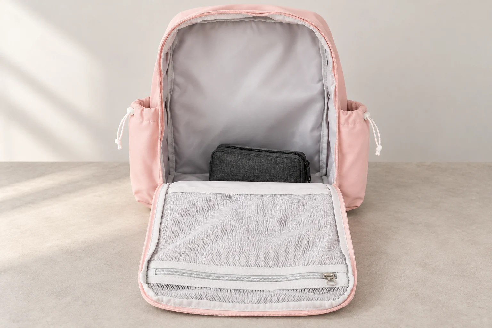
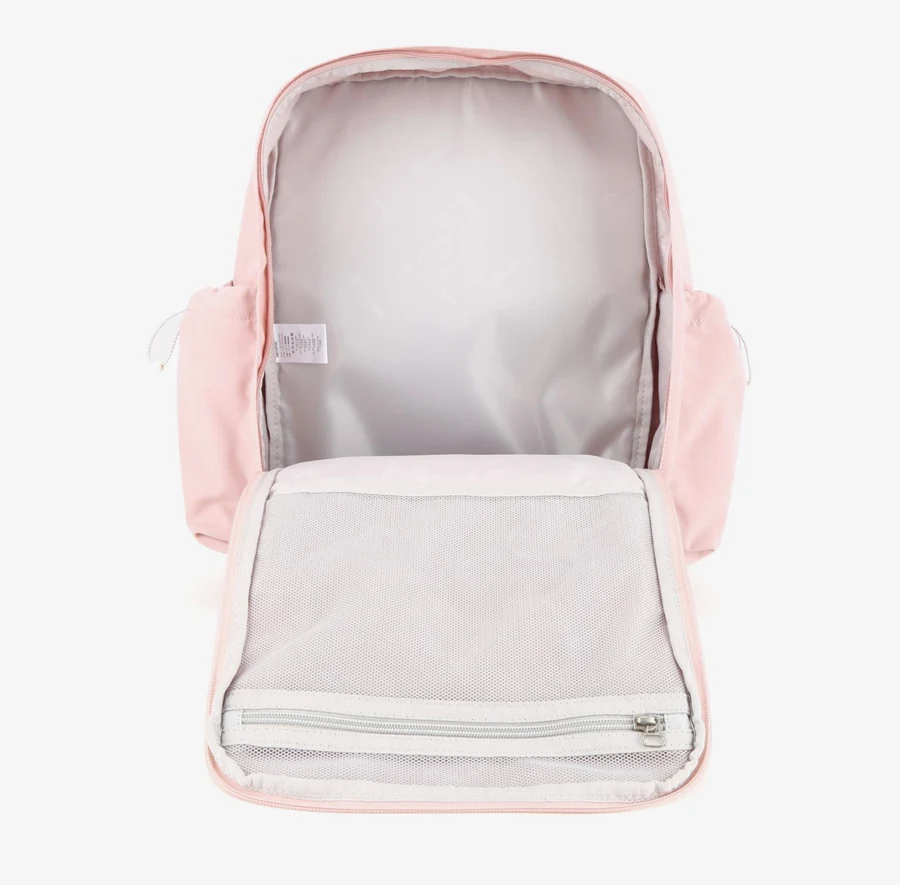
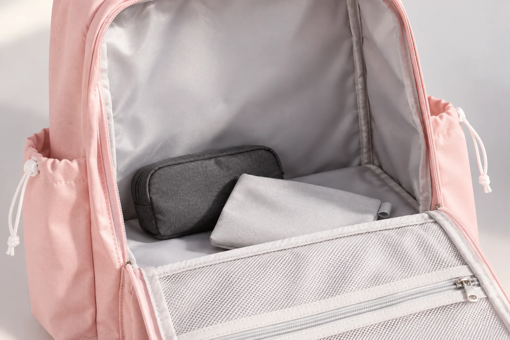

밝은 안감의 백팩인데, 왜 안쪽 물건은 잘 안 보일까

가방 속 물건이 잘 보였으면 해서 밝은 안감의 백팩을 고르기도 합니다. 그런데 입구를 열고 들여다보면 바닥 쪽은 여전히 어둡거나, 찾던 작은 파우치가 다른 물건 뒤에 숨어 있을 수 있습니다. 안감의 색이 밝다는 설명이 틀렸다기보다 그 설명 하나로 알 수 없는 조건이 남아 있는 셈입니다. 안감의 색, 안으로 들어오는 빛, 시선을 가리는 물건은 각각 따로 살펴볼 필요가 있습니다.
No.1089 핑크의 실제 내부 사진에는 밝은 회색 계열의 안감과 앞쪽으로 펼쳐진 메쉬 패널이 보입니다. 사진은 내부가 비어 있고 입구가 크게 열린 상태입니다. 이 장면은 안감의 색과 내부 형태를 확인하는 데 유용합니다. 다만 조명을 받은 빈 가방의 모습이 짐을 넣은 뒤 모든 자리에서 보게 될 풍경과 같다고 생각하면 기대가 어긋날 수 있습니다.
사진에서 보이는 밝기와 가방 안으로 들어오는 빛
안감 자체의 색은 가방을 어느 자리에 놓아도 같지만, 눈에 들어오는 밝기는 달라집니다. 입구 주변 천이 안쪽으로 접혀 있거나 몸이 조명을 가리면 바닥에는 그림자가 생깁니다. 창가에서 넓게 펼친 가방과 어두운 현관에서 조금만 연 가방의 시야가 다른 이유입니다. 밝은 원단도 빛이 충분히 닿지 않는 자리까지 스스로 밝게 만들지는 않습니다.
책상 위에서 물건을 찾는 상황이라면 먼저 입구가 자신을 향하도록 돌려 보세요. 지퍼를 완전히 열 수 있는 자리에 내려놓고, 입구의 천이 안쪽을 덮지 않는지 살펴보는 것만으로 관찰 조건을 바꿀 수 있습니다. 반면 한 손으로 들고 있는 가방을 들여다볼 때는 입구를 잡은 손과 손잡이, 몸의 그림자가 함께 걸릴 수 있습니다. 같은 가방이라도 이때 보이지 않는 부분을 안감 색만의 문제로 단정하기는 어렵습니다.

실제 제품 사진에서 No.1089의 안감은 거의 흰색처럼 밝게 보이는 부분과 회색으로 보이는 접힌 부분이 함께 있습니다. 한 장 안에서도 면의 방향과 주름에 따라 밝기가 달라지는 것을 볼 수 있습니다. 화면 밝기를 올려 사진을 보는 일과 실제 가방 안의 조명을 바꾸는 일은 다릅니다. 제품의 안감 색을 확인할 때는 화면 속 가장 밝은 부분 하나만 고르기보다, 가장자리와 바닥의 음영도 함께 보는 편이 좋습니다.
밝은 바탕은 대비를 만들지만, 겹침을 없애지는 않습니다
짙은 회색 파우치는 밝은 안감과 색 차이가 나서 윤곽을 구분하기 쉬울 수 있습니다. 그러나 그 위를 다른 물건이 덮고 있다면 바탕색이 무엇이든 보이지 않습니다. 여기서 대비와 가림을 구분해야 합니다. 대비는 보이는 물체의 경계를 구분하는 문제이고, 가림은 그 물체가 시선 앞에 드러나 있는지의 문제입니다. 밝은 안감만으로 두 문제를 한꺼번에 해결할 수는 없습니다.
반대로 밝은 회색이나 아이보리색 소품은 안감과 비슷한 톤이어서 경계가 두드러지지 않을 수 있습니다. 꼭 검은색 파우치로 바꾸어야 한다는 뜻은 아닙니다. 이미 쓰는 물건이라면 손잡이나 지퍼 끝의 색이 드러나는 방향으로 놓아 보는 방법도 있습니다. 다만 이런 배치는 찾기 쉬운 상태를 살피는 예시입니다. 특정 물건의 수납 가능 여부나 가방의 정리 성능을 시험한 결과로 받아들여서는 안 됩니다.

위 연출 사진의 작은 파우치는 밝은 안감과 물체의 경계, 물건끼리 겹치는 부분을 설명하기 위한 소품입니다. 실제 제품에 포함된 구성품이 아니며 크기를 검증한 수납 예시도 아닙니다. 제품의 내부 치수가 확인되지 않았다면 외부 폭과 소품 폭을 단순히 비교해 들어간다고 판단할 수 없습니다. 시야를 설명하는 사진과 수납 치수를 증명하는 사진은 서로 다른 근거가 필요합니다.
겹침이 생기는 방향도 중요합니다. 세워 놓은 물건의 옆면만 보이는 경우와 평평한 물건이 위를 덮는 경우는 찾는 방식이 다릅니다. 앞의 물건을 하나씩 모두 꺼내기 전에, 무엇이 무엇을 가리고 있는지 한 번 보면 가방 속 구성을 이해하기 쉽습니다. 하지만 이동 중에 눈을 가까이 대고 깊이 손을 넣기보다는 가방을 안정된 자리에 내려놓는 편이 관찰에는 유리합니다. 안감이 밝다는 이유로 보지 않고 손을 넣는 습관까지 정당화되지는 않습니다.
내부 사진은 ‘밝다’ 다음에 무엇을 보여 주는가
상품 사진을 비교할 때는 안감의 색 외에 입구가 얼마나 열린 상태인지, 카메라가 어느 높이에서 안을 보는지, 물건이 비어 있는지를 함께 읽어 보세요. No.1089의 원본 내부 사진은 앞 패널을 앞으로 펼쳐 주 수납부를 보여 줍니다. 여기에 보이는 앞쪽 메쉬 구획과 안쪽 바탕은 서로 다른 면입니다. 메쉬가 보인다는 사실을 안쪽 전체가 투명하다는 뜻으로 확대해서는 안 됩니다.
확인된 제품 정보상 No.1089의 외부 크기는 가로 29.5 × 세로 42 × 폭 12cm이고 겉감과 안감은 폴리에스터입니다. 이 정보에는 내부 각 구획의 너비나 깊이가 들어 있지 않습니다. 밝은 안감 사진을 보고 노트북 전용 칸의 유무나 특정 소품의 고정 방식까지 추정하는 것도 피해야 합니다. 눈에 보이는 평평한 면 뒤에 어떤 구조가 있을지는 해당 제품의 명확한 안내가 있어야 말할 수 있습니다.
안감이 밝으면 어두운 소품과의 색 차이를 기대할 수 있습니다. 그렇다고 선택의 기준을 색 하나로 끝낼 필요는 없습니다. 집에서 가방을 여는 자리의 밝기, 주로 담는 물건의 색, 입구를 펼칠 수 있는 공간이 함께 맞아야 실제 시야를 상상할 수 있습니다. 내부 사진을 다시 볼 때 “밝은 안감인가”에 이어 “내가 찾을 물건의 윤곽이 어느 방향에서 보일까”를 물어보세요. 제품 사진을 사용 장면과 연결하는 구체적인 질문이 됩니다.